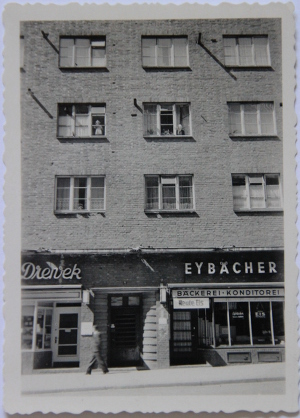
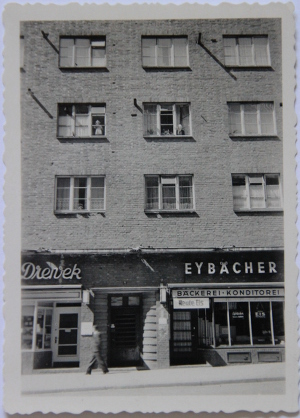

| Julie, Hermann und Else |
| Alsterlust: Julie mit Schwestern Marta und Anna |  |
|  | Julie und Gisela im Haus Mohlenhofstr. im Fenster 2ter Stock |
| Vor dem Laden, Julie in der Mitte |  |
 | Julie und ihre Schwester Martha |
| Julchen mit Hörgerät |  |
Julie hat im Krieg alles nach Rostock zu Paula Bahruth geschickt, um es vor den Bomben zu retten. Dort ist die Familie ausgebombt worden.
Julie ist in der Klinik Oberaltenallee gestorben, an Krebs.
| | Julie, Hermann und Else |
| Alsterlust: Julie mit Schwestern Marta und Anna | |
|  | Julie und Gisela im Haus Mohlenhofstr. im Fenster 2ter Stock |
| Vor dem Laden, Julie in der Mitte | |
| | Julie und ihre Schwester Martha |
| Julchen mit Hörgerät | |